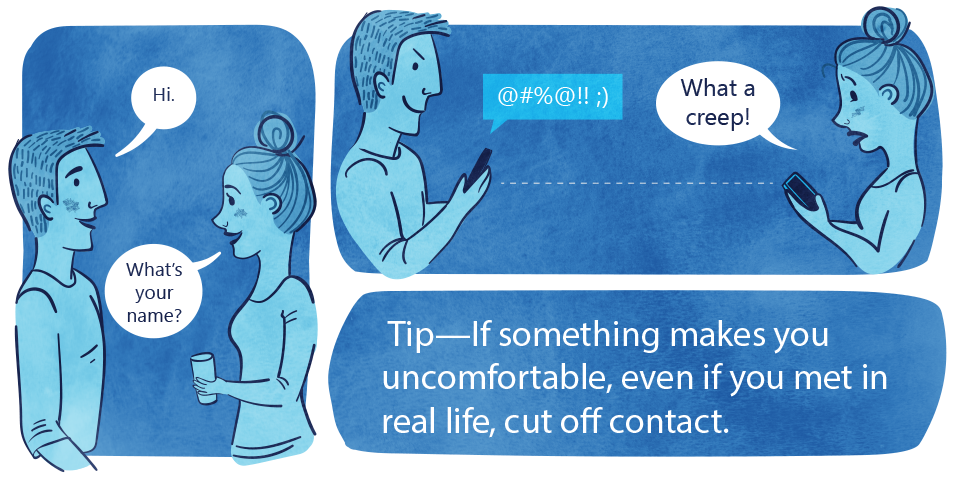

Whats an easy way to stay safe online?
The very first way to stay safe online is to secure, tighten and never share any of your passwords unless it is 100% nessesary to do so.
The first easy way to stay safe online is to change all your passwords frequently (every 1- 2 months) and tighten it using tactics like this:
A combination of letters and numbers
Special charecters
Upper and lowercase letters
Doesn’t make sense as a word
Isn't a name.
A good tip is to only share images and information that your 100% happy having circulate around the internet because this is almost 100% what it is going to do. When you post something online it is never ever going to be actually deleted, all pictures and information is stored on servers.
